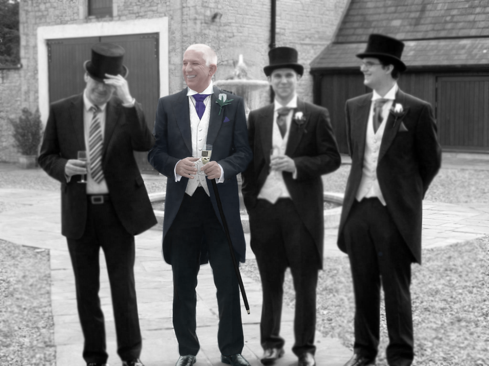
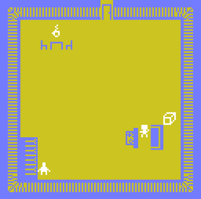
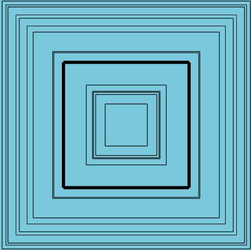

Colourisation
In the colourisation assessment we were instructed to use colour on a still image to bring
forward certain aspects and draw attention in ceetain areas.
I therefor decided to do this
image and highlight my father as he is one of the people in my life I look up to the most.
Stop Motion
In the stop motion animation assessment, the topic chosen for us to highlight was difference.
what difference that is was up to us.
I chose to use a difference in myself from normal
people and chose to highlight some characteristics of ADHD. The finished product was jumpier
than i wished it to be, however it was too late in the process of creating the stop motion that
i realised it was jumpy.
The entire stop motion sequence was hand drawn, that background
being used as a treadmill where the beginning matches the end, restarting the background again.
Bitsy Game
 Link to Bitsy GameThe bitsy game brief was simple, create a bitsy game that took a minimum of 2-4 minutes when taking the most direct route, other then that everything was up to us.
Again, drawing from past and current events in my life at the time, I decided to use the game to draw attention to something called "self-abandonment", having realised I had been suffering from it and was in the proocess of resolving it, i not only used this game to spread awareness, but to also help myself overcome this issue.
Non-Linear Story
Twine StoryboardThe assessment brief for the non-linear story was to create an interactive story that engaged the user in some fashion.
I decided to use differentiating ending or outcomes depending on what the person does within the story, and at the same time, testing their moral compass, and question their own actions in the scenario.
I used this assessment to demonstrate, to the best of my abilities of using javascript code at the time, how my brain works in 3D modelling, having been informed recently at the time that it is not a common trait.
Visual Artefact Images
Here you are being presented with the still images from this assessment the visual artefact assessment


Audio Artefact
Link to audio artefact Like the Visual interactive experience, we had to do the same, but with audio instead, any visuals were not to destract from the audio.